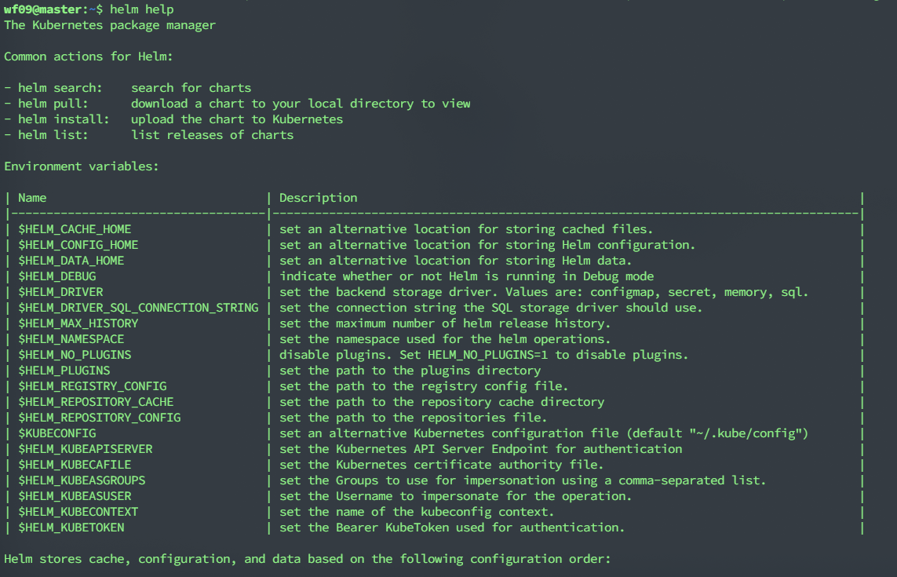
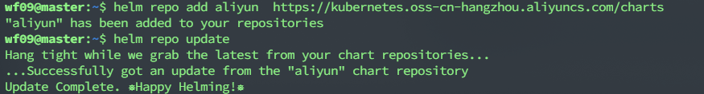
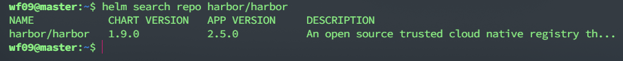

使用Helm中部署Harbor
Harbor 是一个开源的企业级私有 Docker 镜像仓库，我们可以利用 Harbor 在本地安全地存储和管理 Docker 镜像，而不需要将镜像上传到 Docker Hub 或其他第三方镜像仓库。
关键词：Harbor
安装Helm
我们将 Helm 客户端安装在 k8s-master 节点上
用二进制版本安装
- 下载 需要的版本
- 解压(
tar -zxvf helm-v3.0.0-linux-amd64.tar.gz) - 在解压目中找到
helm程序，移动到需要的目录中(mv linux-amd64/helm /usr/local/bin/helm)
然后就可以执行客户端程序并 添加稳定仓库:
helm help.

查看版本号
1 | helm version |
安装命令补全
1 | echo 'source <(helm completion bash)' >> ~/.bashrc |
修改Helm仓库镜像
1 | helm repo add aliyun https://kubernetes.oss-cn-hangzhou.aliyuncs.com/charts |

查看仓库列表
1 | helm repo list |
安装Harbor
添加Harbor仓库
1 | helm repo add harbor https://helm.goharbor.io |
搜索Harbor
1 | helm search repo harbor/harbor |

将Harbor下载到本地
1 | helm fetch harbor/harbor |
解压缩
1 | tar xvf harbor-1.9.0.tgz |
修改配置
修改配置文件values.yaml，具体查看GIthub配置列表。
这里修改了以下几个配置：
1 | expose: |
其中 pvc-harbor 是预先创建好的 PVC，创建过程略。
部署 Harbor：
1 | $ helm install -g harbor/harbor -f values.yaml . |
部署成功，等待 Harbor
启动完成，然后就可以通过http://192.168.232.167:30004
访问Harbor，默认用户名是admin，密码是Harbor12345。
由于 Docker 自从 1.3.x 之后，docker registry
交互默认使用的是HTTPS，而我们搭建的 Harbor 使用的是HTTP，所以为了避免
pull/push
镜像时得到错误：http: server gave HTTP response to HTTPS client，需要修改
docker 的配置文件
/etc/docker/daemon.json，加入以下配置：
1 | { |
保存后重启 docker 服务：
1 | sudo systemctl restart docker |
上传第一个镜像
下载一个 busybox 镜像：
1 | docker pull busybox:latest |
修改 tag：
1 | docker tag busybox:latest 192.168.232.167:30004/library/busybox:latest |
library 是 Harbor 的默认项目地址，也可以登录 Harbor 自行新建一个项目。
使用 docker login 登录到 Harbor，并输入用户名和密码：
1 | docker login 192.168.232.167:30004 |
登录成功后，上传镜像到 Harbor：
1 | docker push 192.168.232.167:30004/library/busybox:latest |
后记
上面的软件没有部署完，例如PVC和helm的架构还不懂，因此先告一段落。
决定先使用docker-compose先部署Harbor
。
参考文档
https://helm.sh/docs/using_helm/#installing-helm
https://github.com/goharbor/harbor-helm
https://www.cnblogs.com/dukuan/p/9963744.html
https://blog.51cto.com/wangpengtai/2418636?source=dra
http://kpali.me/2020/05/13/deploy-harbor-in-kubernetes.html